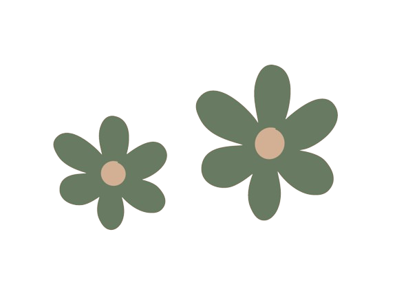
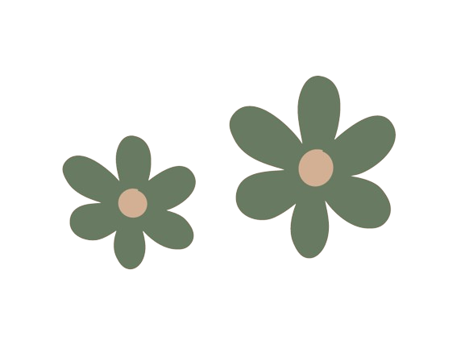

Centres d'intérêt
Musique :
La musique occupe une place centrale dans mes centres d'intérêt. C'est une passion qui m'anime au quotidien. Que ce soit à la maison, en déplacement ou au travail, je suis constamment accompagné de ma musique préférée. Mon goût musical est plutôt éclectique, allant du métal au piano, en passant par divers autres genres. Je trouve que l'instrumental d'une chanson est crucial, car il peut susciter en moi un réel engouement pour un titre. Bien que je ne sois pas toujours attentif aux paroles, je prends le temps de les apprécier lorsque certaines me touchent particulièrement. Actuellement, mes préférences musicales se portent vers la Kpop, la Pop et le Rap, avec des artistes tels que Stray Kids, IVE, aespa, Post Malone et Damso. Parmi les morceaux qui ont retenu mon attention récemment, on peut citer "MANIAC" de VIVIZ, "Straight Line" de Kep1er et "The Killa (I Belong to You)" de TOMORROW X TOGETHER. Je recommande vivement la découverte de l'EP "IVE SWITCH" d'IVE, sorti ce 29 avril, ainsi que l'album "5-STAR" de Stray Kids, paru en juin dernier. Ces œuvres valent véritablement le détour.
Danse :
La danse représente l'un de mes intérêts les plus forts, une passion ancrée dans ma vie depuis mon plus jeune âge. C'est une relation intime qui perdure à travers le temps, où chaque pas me procure un sentiment de bien-être, comme une recharge d'énergie. La danse me permet de m'évader, de me détendre et de me connecter profondément avec la musique, m'offrant ainsi un répit bienvenu dans le tourbillon quotidien. Bien que je n'aie jamais suivi de cours formels, je me considère compétent dans cet art. Je n'ai pas de style de danse particulier, appréciant aussi bien les mouvements énergiques que les plus calmes. Récemment, je me suis engagé dans l'apprentissage de chorégraphies sur des musiques de Kpop, une expérience à la fois amusante et stimulante. Parmi mes chorégraphies favorites figurent "I AM" d'IVE et "Teddy Bear" de STAYC, que je maîtrise parfaitement. Actuellement, je relève le défi d'apprendre la chorégraphie de "MAGO" de GFRIEND, une tâche exigeante mais captivante. Pour moi, la danse et la musique forment un duo indissociable, une combinaison harmonieuse qui enrichit ma vie au quotidien.
Volley-ball :
Le volley-ball occupe une place spéciale dans mes intérêts, étant mon sport de prédilection. Bien que je ne maîtrise pas toutes les subtilités techniques de ce sport, chaque fois que je foule le terrain, je ressens une intense satisfaction à jouer. Le volley offre une combinaison unique de plaisir et de camaraderie avec les coéquipiers, tout en proposant une dose de compétition, de concentration et de soutien lors des matchs. Ce mélange d'éléments me permet de rester à la fois concentré et détendu. J'ai découvert ma passion pour le volley-ball pendant mes années de lycée, notamment en terminale, lors des sessions post-cours avec mes amis et pendant les séances d'EPS. Plus tard, lors de mes études supérieures, j'ai décidé de franchir le pas en m'inscrivant dans un club de volley-ball, séduit par l'atmosphère et l'esprit d'équipe de ce sport. Je suis actuellement membre de mon club pour la deuxième année consécutive, bien que je prenne actuellement une pause de plusieurs semaines pour des raisons de santé.
Cuisine :
La cuisine est un de mes passe-temps, bien que moins profond que mes autres intérêts, il n'en reste pas moins important à mes yeux. Cela fait déjà quelques années que je m'y adonne. Initialement porté sur la préparation de plats salés, je me lance désormais dans l'exploration du domaine de la pâtisserie. J'aime constamment expérimenter de nouvelles recettes tout en cherchant à perfectionner celles que je maîtrise le mieux. Parmi mes créations, mon plat signature est constitué de gnocchis frais accompagnés d'une savoureuse sauce à la crème fraîche, au fond de veau, aux champignons et au parmesan. C'est une recette réconfortante, parfaite pour les soirées d'automne et d'hiver. Récemment, j'ai eu l'occasion de découvrir une recette de Cinnamon Rolls sur Instagram, et je dois dire que c'était l'une des meilleures pâtisseries que j'aie jamais réalisées. Avec l'arrivée de l'été, je prévois d'explorer de nouvelles recettes et de me concentrer davantage sur les créations sucrées.
Autres :
J'ai plusieurs autres passions qui sont profondément ancrées en moi. Bien que je ne sois pas un grand lecteur, je prends de plus en plus plaisir à me plonger dans un livre. Actuellement, je me concentre principalement sur les mangas, mais j'essaie également d'explorer d'autres genres littéraires, comme la science-fiction, et j'ai l'intention de commencer la saga Dune. En ce qui concerne les mangas, mes préférés incluent One Piece, Mob Psycho et Death Note. Outre la lecture, le design est une autre de mes passions. Je suis très méticuleux et j'apprécie grandement l'aspect visuel des choses. Par exemple, je mets un point d'honneur à travailler sur le design de ce portfolio, cherchant à lui apporter une touche graphique distinctive. Comme beaucoup de personnes de mon âge, j'apprécie également les jeux vidéo. Même si j'y joue moins ces derniers temps, je trouve toujours du plaisir à me détendre en jouant à des jeux tels que Overwatch 2, où je peux me concentrer, m'amuser et renforcer l'esprit d'équipe, ou The Legend Of Zelda: Tears of The Kingdom, qui offre une expérience de jeu immersive où je peux explorer le monde à mon rythme. Enfin, les randonnées font partie de mes activités préférées. J'apprécie particulièrement les endroits calmes, magnifiques et proches de la nature, qui me permettent de me ressourcer. Récemment, j'ai eu l'occasion de partir dans le Cantal avec trois amis, et cette expérience a été l'une des plus ressourçantes et mémorables de ma vie. J'ai découvert des endroits charmants et j'espère avoir l'occasion d'y retourner un jour.
À propos de moi
Qui suis-je ?
Je m'appelle Baptiste TIVRIER. Je suis actuellement étudiant en deuxième année de Bachelor Universitaire de Technologie (BUT) en Science des Données à l'IUT Paris Rives de Seine, avec une spécialisation dans le parcours "Visualisation et Conception d'Outils Décisionnels". Passionné par l'informatique, les mathématiques et l'analyse de données, j'ai choisi cette formation pour sa capacité à combiner ces domaines. Je considère cette discipline comme un terrain fertile offrant de nombreuses opportunités d'apprentissage et de développement professionnel. Durant mon parcours académique, j'ai eu l'occasion de me lancer dans une expérience enrichissante en alternance. Depuis Octobre 2023, je suis employé au sein de la Direction Générale de l'Administration et de la Fonction Publique à Paris. Cette opportunité me permet d'appliquer mes connaissances théoriques à des situations réelles, tout en contribuant à la résolution de problèmes concrets avec les données d'entreprise.
Plus tard ?
Après l'achèvement de mon Bachelor Universitaire, mon objectif est de poursuivre mes études en intégrant un programme de Master en Mathématiques Appliquées ou en Statistiques. Cette décision découle de mon désir de continuer à explorer et à approfondir mes connaissances dans ces domaines, dans le but de mener une carrière professionnelle épanouissante et stimulante.Mieux me connaître
Mon album du moment :
"IVE SWITCH" - IVE

Mon album préféré :
"MY WORLD" - aespa
Ma chanson préférée :
"I AM" - IVE

Mon film préféré :
"Harry Potter et le Prince de Sang-Mêlé" - J.K. Rowling

Ma pièce de théâtre préférée :
"Incendies" - Wajdi Mouawad

Mon recueil de poèmes préféré :
"Les Fleurs du Mal" - Charles Baudelaire

Mon manga préféré :
"Mob Psycho 100" - ONE

Mon jeu vidéo préféré :
"The Legend of Zelda: Breath of the Wild" - Nintendo

 
